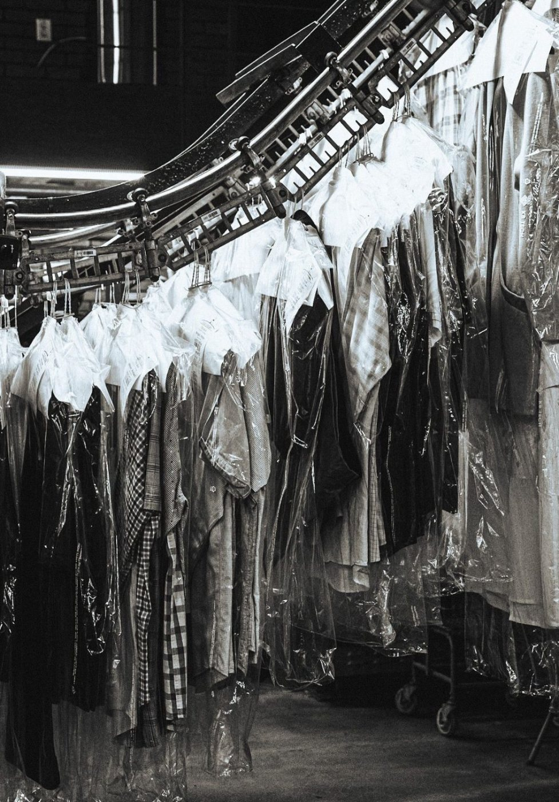
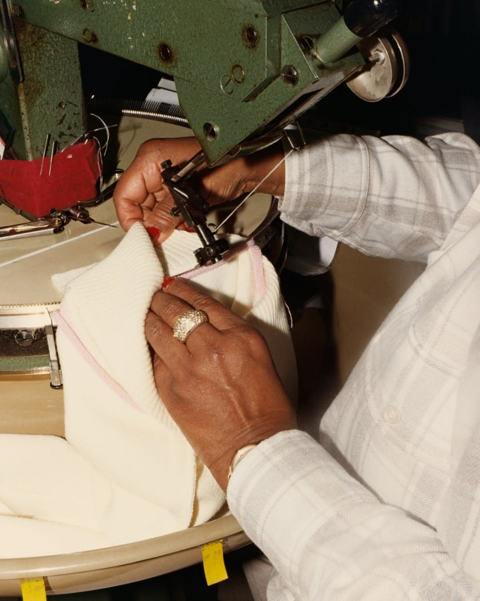

맡긴 옷이 가는 길
맡긴 옷이 가는 길은 접수부터 포장까지 여덟 단계와 단계마다 걸리는 시간입니다.
여덟 단계
막대 길이는 단계별 시간에 비례한다. 단계 시간을 모두 더하면 3시간 50분이다.
- 1
접수 5분
품목과 수량을 적고 접수번호가 찍힌 꼬리표를 옷마다 단다.
- 2
검수 10분
주머니를 비우고, 얼룩·뜯어진 곳·떨어질 듯한 단추를 표시해 접수증에 적는다.
- 3
분류 30분
세탁 방식과 색으로 나눈다. 같은 방식의 옷이 모이면 한 번에 돌린다.
- 4
부분 처리 15분
표시해 둔 얼룩에 맞는 약제를 발라 먼저 뺀다.
- 5
세탁 60분
물세탁은 40분 안팎, 드라이는 60분 안팎 돌린다.
- 6
건조 90분
건조기·건조실·그물 건조대 가운데 세탁 기호에 맞는 것을 쓴다.
- 7
다림 15분
와이셔츠는 프레스로 4분, 정장은 손다림으로 15분쯤 걸린다.
- 8
검품·포장 5분
얼룩이 남았는지 다시 보고, 비닐을 씌워 선반 번호를 적는다.
같은 방식의 옷이 모일 때까지 기다리고 건조와 다림을 차례로 거친다. 그래서 손이 닿는 시간은 짧아도 영업일로 하루에서 나흘이 걸린다. 가죽과 한복은 바깥 전문점을 오가는 날이 더해진다.

